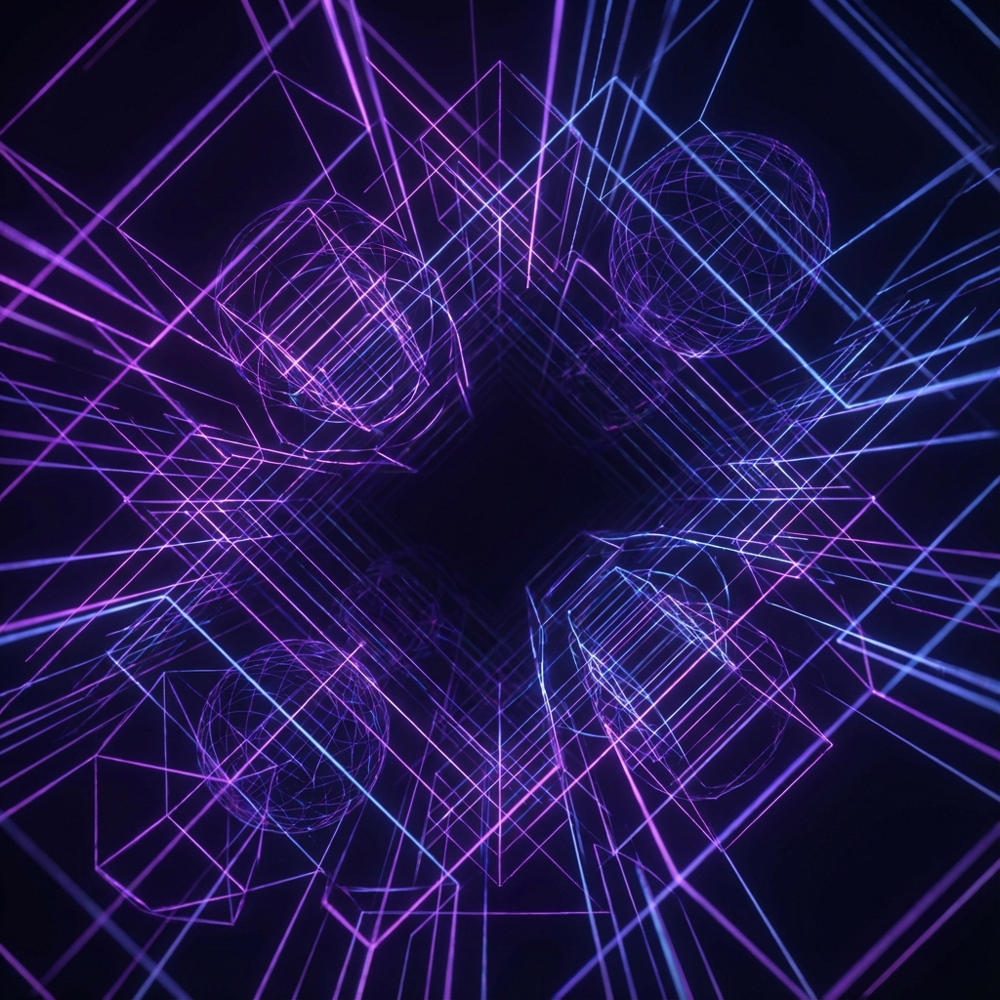

From Inspiration to
Implementation.
See how SiteFlow deconstructs the web's best designs and reconstructs them into pixel-perfect, clean code for your brand.
A Visual Editor
That Writes Code
Forget drag-and-drop constraints. Our editor exposes the underlying CSS variables and Tailwind classes visually. Change a token once, updates everywhere.
- Live Preview
- Component Isolation
- Instant Export
Reverse Engineering
at Scale
Our computer vision models analyze screenshots and DOM structures to understand the "vibe" of a site, translating it into a reusable design system.
The Workflow
Scan & Learn
Feed our AI 3-5 URLs. It analyzes layout patterns, typography scales, and color harmonies.
Synthesize System
We extract a unified design system (tokens, components) that blends the best traits of your inputs.
Generate & Deploy
Get a fully responsive, semantic HTML/Tailwind site deployed to a global edge network instantly.
"collection": "blog_posts",
"fields": [
"title", "slug", "content", "cover_image"
]
}
Content is King.
Managing it is Queen.
Don't just build a shell. SiteFlow provisions a headless CMS tailored to your content needs. Define collections, visual editing, and instant API generation automatically.
- Visual Page Builder
- REST & GraphQL API
- Asset CDN
- Multi-language